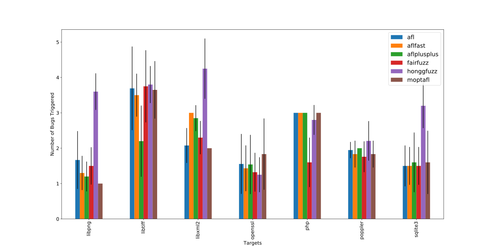
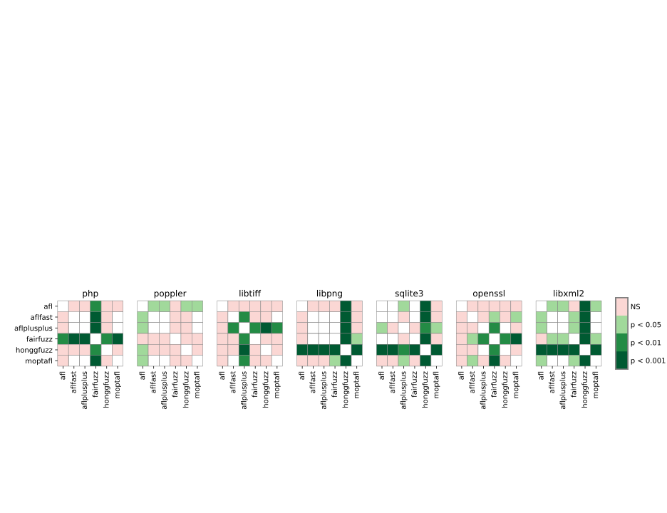

This plot shows the mean number of unique bugs triggered by every fuzzer against every target
library, and the standard deviation bar, across all campaigns.

Stastistical Significance
This matrix summarizes the p-values of the pairwise Mann-Whitney U tests calculated against the
total bug count sample sets collected for every fuzzer across all campaigns. Cells with a green
shade indicate that the number of bugs triggered by a fuzzer is statistically different.

Expected Time-to-Bug
Ranking of Bugs and Fuzzers
This table shows the calculated values of expected time-to-trigger-bug for every bug triggered
during the evaluation. The calculation accounts for missed measurements (where the fuzzer only
triggers a bug in M out of N campaigns) and fits the distribution of time-to-bug samples onto an
exponential distribution. More information about this can be found in the Magma paper.